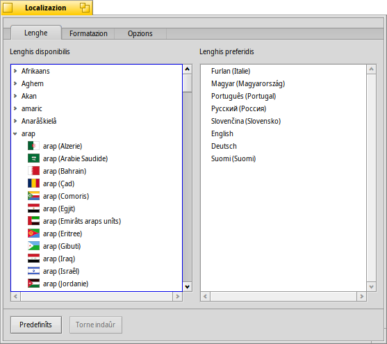
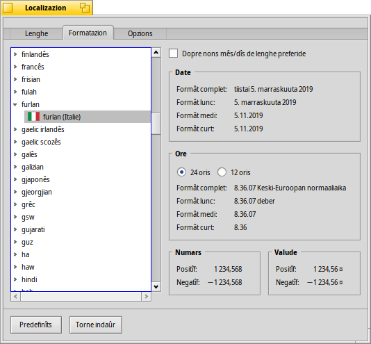

Localizazion
Localizazion
| Deskbar: | ||
| Posizion: | /boot/system/preferences/Locale | |
| Impostazions: | ~/config/settings/Locale settings |
Il sisteme di adatament locâl (localizazion) di Haiku nol inclût dome la sostituzion dai tescj cu lis traduzions, ma ancje ativitâts plui complessis come la formatazion dai numars, des datis e des oris intune forme che e corispuindi aes tôs preferencis di Localizazion.
 Lenghe
Lenghe
Haiku al è stât voltât intun grum di lenghis, purtrop cualchi traduzion no je ancjemò completade. Par cheste reson tu puedis sielzi plui di une lenghe in “Lenghis preferidis”. Se cualchi toc al mancje intune traduzion, al ven sostituît cu lis peraulis de sucessive lenghe preferide. L'inglês e je la lenghe di repeç predefinide (ancje cuant che no je in liste).
In chest esempli, la lenghe preferide e je stade metude a Spagnûl. La prime lenghe di repeç e je il talian e se ancje lì al mancje il test, si torne ae lenghe predefinide, l'inglês.
Come che tu puedis viodi, pandint une vôs di lenghe a çampe al mostre des sot-vôs pes specifichis variantis o dialets di chê lenghe (se disponibilis).
Formatazion
Inte schede tu puedis configurâ il formât di date, ore, numars e monede in maniere indipendente rispiet a chê de configurazion de lenghe preferide.
Tu podaressis jessi un frut spagnûl che si cjate inte part de Svuizare dulà che si cjacare par talian. Cussì, tu varessis di preferî il to sisteme par Spagnûl, ma i numars e la monede formatade come che tu dopraressis a vore lì: Swiss/Italian.
Se tu ti cjatis miôr cui tiei nons spagnûi pai dîs e pai mês (pense aes datis modificadis dai file, par esempli), tu puedis passâ parsore di cheste formatazion specifiche de date cu la casele di selezion in alt .
Ancje se l'esempli parsore forsit nol è il câs plui comun, al dimostre però la flessibilitât dal sisteme.
Opzions
La ultime schede e ufrìs une opzion che ti . Disabilite la casele di selezion se tu preferissis che la interface grafiche e sedi localizade, ma tignint i nons origjinâi in inglês pai panei des preferencis, pes aplicazions e pai nons standard des cartelis.
Lis modifichis a vegnin aplicadis daurman, dut câs tu varâs di sierâ e tornâ a inviâ lis aplicazion che in chel moment a son in esecuzion par fâ in mût che a mostredin lis gnovis impostazions.
| al torne a puartâ dut ai valôrs predefinîts. | ||
| al puarte indaûr aes impostazion che e jerin ativis cuant che si à inviât lis preferencis di Localizazion. |